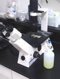

有害微生物細菌病毒
微生物廣範分布在大自然界中，絕大部份對人類無害，許多對人類是有益的也是必需的，微生物學是從18世紀萌芽，是一們很廣範的科學，醫學微生物學則是其中一分支科學，它起源於19世紀，科學家證實微生物並非"自然發生學理論"，爾後，在德國學者柯霍(Kock)發明了細菌塗片染色，創用固體培養液，判斷出病原體，並提出了柯霍法則，其法廣泛沿用至今，後人尊稱細菌之父，同時也開啟了醫學微生物之發展，而消毒是將有害微生物去除或消滅，因有害微生物定義不易，某些微生物雖有害但他是必須要存在，對於有害微生物之消毒，主要是有立即性危害為主。


大約有70%的傳染病可經由呼吸道分泌物與飛沫或排泄物..等攜帶病原體，通過空氣途徑傳播致病細菌、病毒傳播給易感人群，進而引起呼吸道感染而最終致病，而人們接觸最多的室內空氣品質則令人擔憂，不管是氣溫高、濕度大、空氣不易流通，或是空調內部問題，都會加速致病微生物進一步繁殖與擴散。
天花是古老的病毒，雖然在18世紀底就發明了疫苗，也推動"人工主動免疫"，它是經過百年才消滅的病毒，在20世紀尚有3-5億人是死於天花，在1980年世界衛生組織才正式宣布天花已被人類滅絕，而地球還有更多許多古老細菌，隨時都在我們生活週遭環境，許多是人類無法消滅的，除此外尚有許多變種或人類亂用抗生素而產生抗藥性細菌，這些生活在我們室內的有害微生物，是我們首要防治對象。

室內有害微生物藏身處
空調系統：有一般的空氣傳染及飛沫傳染，空氣中有懸浮粒子有利於細菌的散播，空調或地毯等經震動而飛揚的細菌或塵螨屬前者，人與人間屬後者，大多數是危害呼吸道為主；其中更以醫院最為嚴重。
濕、油表面：此為細菌微生物滋生最好環境，以餐桌、廚房、廁所、茶水間以及人常接觸之把手最多。
新冠炎防治法：新冠(武漢)肺炎消毒不是唯一方法，首要方法為防護自我、常洗手、隨身攜帶酒精棉片，口罩需正確穿載，外表面可噴塗無機抗菌劑，其它專業部份請洽本公司。